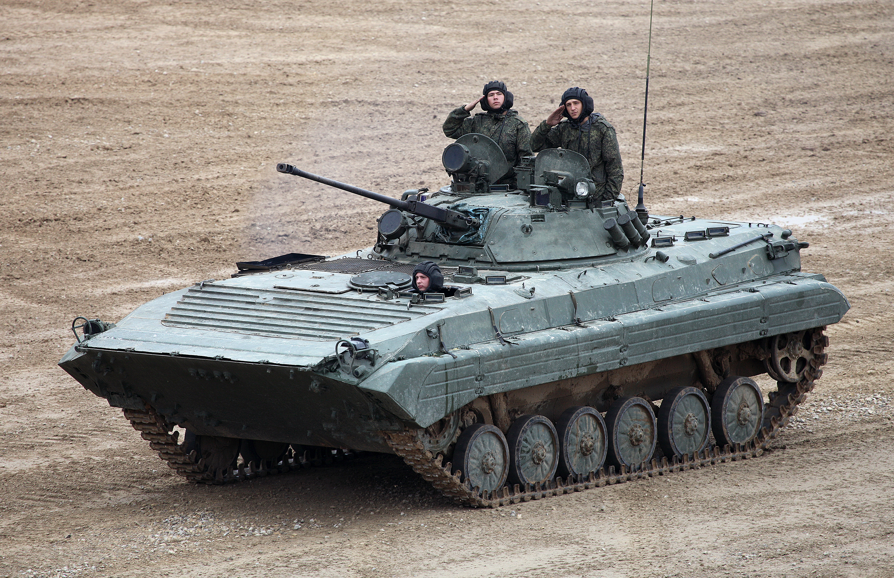

Узнайте больше о характеристиках, особенностях и истории БМП-2 на этом сайте.
БМП-2 (индекс ГБТУ — Объект 675) — советская и российская гусеничная боевая машина пехоты, предназначенная для транспортировки личного состава к переднему краю
Основные характеристики:
Боевой вес: 14,7 тонн
Экипаж: 3 человека
Вооружение: 30-мм автоматической пушки 2А42,С пушкой спарен 7,62 пулемёт ПКТ, для борьбы с танками имеет ПТРК 9К111 «Фагот» или 9К111-1 «Конкурс» с 4 выстрелами к нем
радиостанции: Связь БМП-2 обеспечивается радиостанцией Р-123М / Р-173 и аппаратом А-1 ТПУ. У оператора имеется аппарат А-2 ТПУ для внутренней связи
Двигатель — 6-цилиндровый 4-тактный бескомпрессорный дизель УТД-20С1 жидкостного охлаждения с непосредственным впрыском. Максимальная мощность составляет 210—221 кВт. Общая масса сухого двигателя около 700 кг[
Корпус и башня БМП-2 сварены из катаных стальных броневых листов от ЭШП и ТМО толщиной от 5 до 19 мм. Лоб башни толщиной 23 мм.
БМП-2 и другие его модернизации активно используется во многих стран СНГ в военных и силовых структурах и является одним из основных боевых машин пехоты
Боевое применение
Афганская война (1979-1989)
Вооруженный конфликт в приднестровье - применялись как приднестровскими формированиями, так и молдавской армией.
Гражданская война в Таджикистане
Карабахская война
Грузино-абхазский конфлик
Чеченские войны
Первая чеченская война — основные потери российской бронетехники пришлись на боевые машины пехоты[69]. В частности, только 81-й мотострелковый полк в ходе штурма Грозного потерял большую часть своих БМП-2: уничтожено 33, отправлено в капитальный ремонт 18, осталось в строю 26[70]. Известен бой, в котором разведрота из трёх российских БМП-2 заняла рубежи на реке Нефтянка. В ходе боя разведрота уничтожила один дудаевский танк (двумя ПТУР), один БТР, два грузовика и несколько огневых точек. Разведчики потеряли одного человека раненым от миномётного огня[71].
Турецко-курдский конфликт
Война в Грузии
Война в Сирии
Российско-украинская война
Вторжение России на Украину (2022)[93] применяются обеими сторонами. По состоянию на осень 2022 года Россия потеряла в ходе вторжения не менее 750 БМП-2, из них около 460 уничтожено и около 230 захвачено украинской стороной
Вторая Карабахская война
Разгон Верховного Совета России — использовались в 1993 году во время октябрьского путча. Вели стрельбу очередями по окнам Белого дома

БТР-80 на репетиции Парада Победы в Москве, 3 мая 2011 года
.jpg)